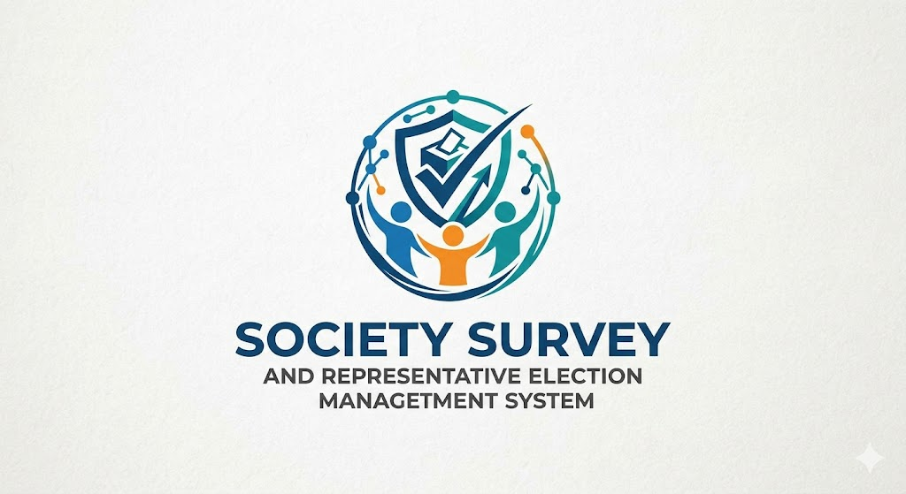

Our platform empowers residents and community members to actively shape local governance. Through the Survey System, your insights gather crucial feedback on upcoming infrastructure, budgetary priorities, and community bylaws. Meanwhile, our instant Polling feature provides direct data to administrative groups, ensuring swift consensus on time-sensitive neighborhood decisions.
The annual general election to vote for your new Executive Council Representatives is officially open. Your chosen representatives hold crucial voting seats concerning financial fund allocations and project approvals. Make your voice count and exercise your democratic right within the society layout.
Note: Ensure your profile data is updated prior to entering the ballot room to prevent identity validation delays.